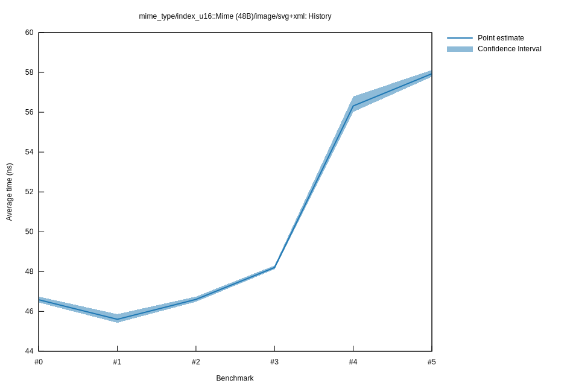

# 32025-10-14T15:36:17-07:00
|
Lower Bound |
Estimate |
Upper Bound |
| Value: |
48.12ns |
48.21ns |
48.31ns |
| Throughput: |
257.64MiB/s |
257.18MiB/s |
256.62MiB/s |
| Change in Value: |
+3.2737% |
+5.1965% |
+9.2821% |
| Change in Throughput: |
-3.1699% |
-4.9398% |
-8.4937% |
No change in performance detected.
# 22025-10-05T14:43:53-07:00
|
Lower Bound |
Estimate |
Upper Bound |
| Value: |
46.48ns |
46.60ns |
46.75ns |
| Throughput: |
266.71MiB/s |
266.02MiB/s |
265.22MiB/s |
| Change in Value: |
-0.0324% |
+0.8199% |
+1.7026% |
| Change in Throughput: |
+0.0324% |
-0.8132% |
-1.6741% |
Change within noise threshold.
# 12025-10-05T13:02:30-07:00
|
Lower Bound |
Estimate |
Upper Bound |
| Value: |
45.43ns |
45.60ns |
45.86ns |
| Throughput: |
272.89MiB/s |
271.86MiB/s |
270.32MiB/s |
| Change in Value: |
-1.2053% |
-0.5236% |
+0.1849% |
| Change in Throughput: |
+1.2200% |
+0.5263% |
-0.1846% |
Change within noise threshold.
# 02025-10-05T13:00:35-07:00
|
Lower Bound |
Estimate |
Upper Bound |
| Value: |
46.45ns |
46.59ns |
46.74ns |
| Throughput: |
266.92MiB/s |
266.12MiB/s |
265.24MiB/s |